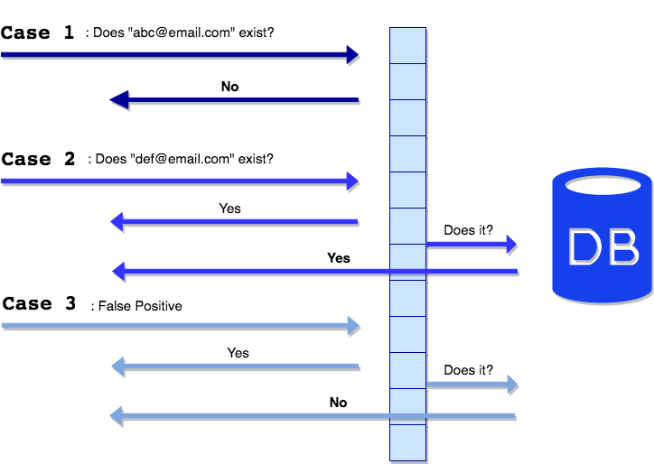

Bloom Filter Database Project
Overview
Currently I am working on my capstone project at SendGrid. SendGrid helps companies send their emails to customers. I am working with Go language, MySQL, and Grafana. My team and I are attempting to maximize the way an emails are searched in the database. We are using the bloom filter data structures to create a client/server simulation. This project is still under way and I expect to post more on it soon.
